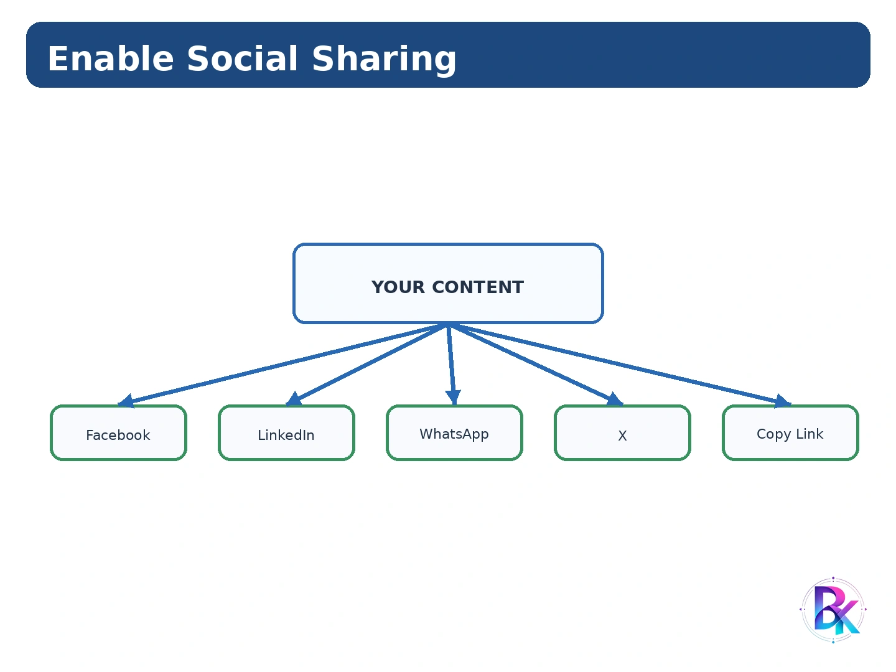

Search Engine Optimization
What is SEO?
SEO (Search Engine Optimization) एक Digital Marketing और Web Optimization Process है जिसके द्वारा किसी Website या Web Page की Search Engine Visibility को Improve किया जाता है। इसका मुख्य उद्देश्य यह होता है कि जब User किसी Search Engine में किसी Topic से Related Query Search करे, तो Relevant Website Search Results में बेहतर Position पर दिखाई दे।
Search Engine Optimization में Website के Content, Keywords, Page Titles, Meta Descriptions, Images, URLs, Internal Links, Site Structure, Loading Speed तथा अन्य महत्वपूर्ण Elements को Optimize किया जाता है। Search Engines Website के Pages को Crawl और Index करके User Query के अनुसार Relevant Results प्रदान करते हैं। :contentReference[oaicite:1]{index=1}
Definition
Definition:
"SEO वह प्रक्रिया है जिसमें Website या Web Page की
Search Engine Visibility को Improve करने के लिए उसके
Content और Technical Elements को Optimize किया जाता है।"
SEO का मुख्य उद्देश्य Search Engine में Website की Organic Visibility और Relevant Traffic को Improve करना है। SEO में Search Engine के लिए Website को समझने और Users के लिए Useful बनाने दोनों पर ध्यान दिया जाता है।
Main Elements of SEO
- Keyword Research
- Quality Content
- Page Titles
- Meta Descriptions
- Image Optimization
- SEO-friendly URLs
- Internal Linking
- Site Structure
- Mobile-Friendly Design
- Website Speed
- Technical SEO
- User Engagement
Why SEO?
Internet पर करोड़ों Websites और Web Pages उपलब्ध हैं। यदि कोई Website Search Engine में दिखाई ही नहीं देती, तो Users के लिए उस Website तक पहुँचना कठिन हो जाता है। SEO Website की Online Visibility को Improve करने में सहायता करता है।
जब Website Relevant Search Queries के लिए Search Results में दिखाई देती है, तो उसके लिए Organic Visitors प्राप्त करने की संभावना बढ़ती है। इसी कारण SEO Business Websites, Blogs, Educational Websites, E-Commerce Websites तथा अन्य Online Platforms के लिए महत्वपूर्ण है। :contentReference[oaicite:2]{index=2}
Importance of SEO
-
Increase Website Traffic
SEO Relevant Search Queries से Website पर Organic Traffic लाने में सहायता करता है। -
Improve Online Visibility
Website को Search Engine Results में अधिक आसानी से Discover किया जा सकता है। -
Increase Brand Awareness
Search Results में लगातार Visibility मिलने से Brand की पहचान बढ़ सकती है। -
Better User Experience
SEO-friendly Website सामान्यतः Clear Navigation, Useful Content और बेहतर Page Structure पर ध्यान देती है। -
Generate Leads
Relevant Visitors को Website पर लाकर Leads Generate करने में सहायता मिलती है। -
Support Business Growth
अधिक Relevant Traffic और बेहतर Visibility Business Growth को Support कर सकती है। -
Long-Term Online Presence
Useful Content और अच्छी Website Structure Long-Term Organic Visibility में सहायता कर सकती है।
यदि कोई Student Google पर "PGDCA Notes in Hindi" Search करता है और किसी Educational Website का Relevant Page Search Results में दिखाई देता है, तो SEO उस Website की Visibility बढ़ाने में महत्वपूर्ण भूमिका निभा सकता है।
How Search Engine Works?
Search Engine एक Software System है जो Internet पर उपलब्ध Information को Discover, Organize और Users की Search Query के अनुसार Relevant Results के रूप में प्रस्तुत करता है।
Search Engine की Working को सामान्यतः तीन प्रमुख Processes में समझा जा सकता है: Crawling, Indexing और Ranking। Search Engine Crawlers Web Pages को Discover करते हैं, उनके Content को Analyze करके Index में Store किया जाता है, और फिर Search Algorithm User Query के अनुसार Relevant Pages को Rank करता है। :contentReference[oaicite:3]{index=3}
1. Crawling
Crawling वह Process है जिसमें Search Engine के Automated Programs, जिन्हें Crawlers, Bots या Spiders कहा जाता है, Internet पर उपलब्ध Web Pages को Discover और Visit करते हैं।
Crawler Page के HTML Code, Links और अन्य उपलब्ध Information को पढ़कर Page के Content और Structure को समझने का प्रयास करता है।
2. Indexing
Crawling के बाद Search Engine प्राप्त Information को Analyze और Organize करके अपने Index में Store करता है। Index को एक बहुत बड़े Digital Database की तरह समझ सकते हैं जिसमें Search Engine द्वारा Discover की गई Information व्यवस्थित रूप से रखी जाती है।
3. Ranking
जब User Search Engine में कोई Query Enter करता है, तो Search Engine अपने Index में उपलब्ध Pages में से Query के लिए Relevant Pages को Search Algorithm की सहायता से Evaluate और Order करता है।
Example
मान लीजिए User Google में "How to Learn JavaScript" Search करता है। Search Engine अपने Index में उपलब्ध Relevant Pages को Analyze करता है और User की Query से Related Results को Search Results Page पर Display करता है।
Search Engine की Basic Working को Crawling → Indexing → Ranking के रूप में समझा जा सकता है।
Essential SEO Guidelines
SEO केवल Website Owner का कार्य नहीं है। Website Owner, Designer, Blogger और Content Writer सभी Website की Search Visibility में योगदान देते हैं। इसलिए प्रत्येक व्यक्ति को अपने Role के अनुसार SEO-friendly Practices को Follow करना चाहिए।
Guidelines for Website Owner
- Website का उद्देश्य स्पष्ट रखें।
- Target Audience को समझें।
- Useful और Original Content उपलब्ध कराएँ।
- Website को Mobile-Friendly रखें।
- Website Security के लिए HTTPS का उपयोग करें।
- Website Speed को Improve करें।
- Google Search Console का उपयोग करें।
Guidelines for Web Designer
- Clean और Responsive Layout बनाएँ।
- Logical Navigation रखें।
- Proper Heading Structure का उपयोग करें।
- Images को Optimize करें।
- Page Loading Speed को ध्यान में रखें।
- Mobile और Desktop दोनों के लिए Design करें।
Guidelines for Blogger
- Audience की Search Intent समझें।
- Relevant Topics पर Content लिखें।
- Useful और Updated Information दें।
- Proper Headings और Subheadings का उपयोग करें।
- Internal और Relevant External Links का उपयोग करें।
- Content को Social Media पर Promote करें।
Guidelines for Content Writer
- Relevant Keywords को Naturally उपयोग करें।
- Keyword Stuffing से बचें।
- Clear और Readable Language का उपयोग करें।
- Strong Headlines लिखें।
- Proper Paragraphs और Headings बनाएँ।
- User के Question का Direct Answer दें।
SEO में Keywords का Natural उपयोग करना चाहिए। Keywords को अत्यधिक मात्रा में Repeat करना Keyword Stuffing कहलाता है और यह Poor User Experience का कारण बन सकता है। :contentReference[oaicite:4]{index=4}
Keyword Research
Keyword Research SEO की एक महत्वपूर्ण Process है जिसमें यह पता लगाया जाता है कि Users Search Engines में किसी Topic, Product या Service को खोजने के लिए कौन-से Words और Phrases का उपयोग करते हैं।
Keyword Research का उद्देश्य ऐसे Relevant Keywords Identify करना है जिन्हें Target Audience वास्तव में Search करती है। इसके माध्यम से Search Intent, Keyword Relevance, Search Demand और Competition को समझने में सहायता मिलती है। :contentReference[oaicite:5]{index=5}
Example
यदि Website का Topic Python Programming है, तो Possible Keywords हो सकते हैं:
- Python Tutorial
- Learn Python
- Python Programming for Beginners
- Python Notes
- Python Examples
Importance of Keyword Research
- User Intent को समझने में सहायता करता है।
- Relevant Topics Identify किए जा सकते हैं।
- Content Planning आसान होती है।
- Long-Tail Keywords खोजे जा सकते हैं।
- SEO-friendly Content तैयार किया जा सकता है।
- Relevant Organic Traffic प्राप्त करने में सहायता मिलती है।
Creating Content Hierarchy
Content Hierarchy का अर्थ है Website के Content को Logical और Organized Structure में Arrange करना, ताकि Users और Search Engines दोनों आसानी से समझ सकें कि Website पर कौन-सा Content Main Topic है और कौन-सा Subtopic।
Content Hierarchy बनाते समय Main Topic को सबसे ऊपर रखा जाता है और उसके नीचे Related Categories तथा Subtopics बनाए जाते हैं।
Benefits
- Website Structure समझना आसान होता है।
- Navigation बेहतर होती है।
- Internal Linking को व्यवस्थित किया जा सकता है।
- Search Engines को Page Relationships समझने में सहायता मिलती है।
- Users को Relevant Information जल्दी मिलती है।
Brainstorming – Think and Discuss Them
Brainstorming Keyword Research में नए Topics, Questions, Keywords और Content Ideas Generate करने की Process है। इसमें किसी Topic के बारे में अलग-अलग संभावित Questions, Problems और Search Phrases के बारे में सोचा जाता है।
सबसे पहले एक Seed Topic Select किया जाता है। इसके बाद उससे जुड़े Words, Questions, Problems और User Needs को List किया जाता है।
Example
Seed Topic: Digital Marketing
- What is Digital Marketing?
- Digital Marketing कैसे सीखें?
- Digital Marketing Courses
- SEO क्या है?
- Social Media Marketing कैसे करें?
- Digital Marketing Jobs
इस प्रकार Brainstorming से एक ही Topic से अनेक Content और Keyword Ideas प्राप्त किए जा सकते हैं।
Google Suggest
Google Suggest वह Search Feature है जिसमें User Search Box में कोई Word या Phrase Type करता है और Google उससे Related Search Suggestions दिखाता है।
SEO में इन Suggestions का उपयोग Keyword और Content Ideas प्राप्त करने के लिए किया जा सकता है। यह User द्वारा की जाने वाली संभावित Search Queries को समझने में सहायता करता है।
Example
यदि Search Box में "learn python" लिखा जाए, तो Search Engine उससे Related Suggestions दिखा सकता है, जैसे:
- learn python for beginners
- learn python online
- learn python free
- learn python step by step
Google Suggest को Keyword Research में Related Search Ideas और User Query Variations प्राप्त करने के लिए उपयोग किया जा सकता है।
Google Keyword Planner
Google Keyword Planner एक Keyword Research Tool है जिसका उपयोग Keyword Ideas और Search-related estimates प्राप्त करने के लिए किया जाता है।
इसका उपयोग मुख्य रूप से Google Ads Planning में किया जाता है, लेकिन Keyword Research और Content Planning के लिए भी Keyword Ideas प्राप्त करने में सहायता मिल सकती है।
Basic Process
- Keyword या Topic Enter करें।
- Related Keyword Ideas प्राप्त करें।
- Relevant Keywords Select करें।
- Keyword Demand और Competition से Related Information देखें।
- Content Strategy के लिए Suitable Keywords Organize करें।
Keyword Tools
Keyword Tools ऐसे Online Tools हैं जो Keyword Ideas, Related Queries, Search Demand, Competition और अन्य Keyword-related Information प्राप्त करने में सहायता करते हैं।
Examples
- Google Keyword Planner
- Google Trends
- Google Search Suggestions
- Related Searches
- Other SEO Keyword Research Tools
Keyword Tools का उपयोग केवल Keywords की List बनाने के लिए नहीं, बल्कि User Intent और Content Opportunities समझने के लिए भी किया जाना चाहिए।
Google Trends – Finding Search Trends
Google Trends Google की एक Service है जिसका उपयोग अलग-अलग Search Terms की Search Interest को समय और क्षेत्र के अनुसार Explore तथा Compare करने के लिए किया जा सकता है।
SEO और Content Planning में Google Trends की सहायता से यह समझने का प्रयास किया जा सकता है कि कौन-से Topics समय के साथ अधिक Popular हो रहे हैं और किन Topics में Search Interest बदल रही है।
Uses of Google Trends
- Search Trends Identify करना।
- Different Search Terms को Compare करना।
- Seasonal Search Interest समझना।
- Popular Topics Identify करना।
- Content Planning करना।
- Region-wise Search Interest समझना।
Finding Most Searched Terms
Google Trends में किसी Topic या Search Term को Explore करके उसके Search Interest को Time Period, Region तथा Category के अनुसार Analyze किया जा सकता है।
Google Trends को केवल "सबसे अधिक Search हुआ Keyword" बताने वाले Simple Tool के रूप में नहीं समझना चाहिए। यह मुख्यतः Search Interest और Trends को Compare तथा Explore करने में सहायता करता है।
How to Translate Keywords?
अलग-अलग Languages में Users एक ही Product, Service या Topic को अलग-अलग Words से Search कर सकते हैं। इसलिए Local और Multilingual Audience के लिए Keyword Research करते समय Keywords को Target Language के अनुसार Translate और Adapt करना आवश्यक हो सकता है।
केवल किसी Keyword का Literal Translation करना हमेशा पर्याप्त नहीं होता। यह देखना आवश्यक है कि Target Audience वास्तव में उस Concept को किस Word या Phrase से Search करती है।
Example
| English Keyword | Possible Hindi Keyword |
|---|---|
| computer course | कंप्यूटर कोर्स |
| online shopping | ऑनलाइन खरीदारी |
| digital marketing course | डिजिटल मार्केटिंग कोर्स |
Keyword Translation के बाद Search Behaviour को Verify करना महत्वपूर्ण है, क्योंकि कई Technical Terms Users सामान्यतः English में ही Search करते हैं।
Organizing the Keywords
Keyword Research के बाद प्राप्त सभी Keywords को एक व्यवस्थित Structure में Organize करना आवश्यक होता है। इससे यह तय करना आसान होता है कि कौन-सा Keyword किस Page या Content पर Target किया जाएगा।
Keyword Organization Methods
-
Primary Keyword
Page के Main Topic को Represent करता है। -
Secondary Keywords
Main Topic से Related Additional Keywords होते हैं। -
Long-Tail Keywords
अधिक Specific और अक्सर कई Words वाले Search Phrases होते हैं। -
Question Keywords
Users द्वारा पूछे जाने वाले Questions जैसे "What is SEO?" या "How SEO works?" -
Location-based Keywords
किसी Specific Location से Related Keywords।
Example
| Page | Primary Keyword | Secondary Keywords |
|---|---|---|
| SEO Introduction | SEO | Search Engine Optimization, SEO Basics |
| Keyword Research | Keyword Research | SEO Keywords, Keyword Tools |
| Local SEO | Local SEO | Local Search, Local Business SEO |
Writing Headlines (Page Titles)
Page Title किसी Web Page का महत्वपूर्ण HTML Element है जो Page के Topic को Search Engines और Users के सामने स्पष्ट रूप से प्रस्तुत करता है।
SEO-friendly Page Title ऐसा होना चाहिए जो Page के Main Topic को Clearly Describe करे और User को समझ आए कि Page में कौन-सी Information उपलब्ध है।
HTML Example
<title>
Complete SEO Guide for Beginners
</title>
Good Page Title Example
SEO Tutorial for Beginners – Complete Guide
Poor Page Title Example
Home | Page 1 | Website
Guidelines
- Page का Main Topic स्पष्ट करें।
- Relevant Keyword को Naturally Include करें।
- Title को Meaningful रखें।
- Duplicate Titles से बचें।
- Keyword Stuffing न करें।
- User को Page की Value समझ आनी चाहिए।
Page Title Search Engine और User दोनों को Page के Main Topic की जानकारी देने वाला Clear और Relevant होना चाहिए।
Writing Summary (META Descriptions)
Meta Description HTML में एक Meta Element है जो Web Page के Content का Short Summary प्रदान करता है। Search Results में यह Page Title के नीचे दिखाई दे सकता है। इसका उद्देश्य User को Page के Content का Quick Overview देना और Click करने के लिए Context प्रदान करना है। :contentReference[oaicite:6]{index=6}
HTML Syntax
<meta name="description"
content="Learn SEO basics, keyword research,
on-page SEO and website optimization.">
Example
Learn SEO basics, keyword research, page optimization and SEO-friendly website practices in this complete guide.
Guidelines for Meta Description
- Page Content का Accurate Summary दें।
- Relevant Keywords को Naturally Include करें।
- Clear और Concise Language रखें।
- User को Page की Value समझाएँ।
- जहाँ उपयुक्त हो वहाँ Action-oriented Language का उपयोग करें।
- Keyword Stuffing से बचें।
Meta Description Page का Short Summary देती है और Search Result में User के Click Decision को प्रभावित कर सकती है। इसे Natural, Relevant और Useful रखना चाहिए। :contentReference[oaicite:7]{index=7}
SEO for Images
Images Website को Attractive और Informative बनाती हैं, लेकिन Search Engines के लिए Image का Meaning समझना हमेशा Text Content जितना सीधा नहीं होता। इसलिए Images को SEO-friendly तरीके से Optimize करना आवश्यक है।
Important Image SEO Practices
-
Descriptive File Name
Image File का नाम उसके Content को Describe करने वाला रखें। -
Alt Text
Image के लिए Meaningful alt Attribute दें। -
Image Compression
Image File Size को उचित तरीके से Optimize करें। -
Modern Image Format
आवश्यकता के अनुसार WebP जैसे Efficient Formats का उपयोग किया जा सकता है। -
Responsive Images
अलग-अलग Screen Sizes पर Images को उचित तरीके से Display करें।
HTML Example
<img src="seo-guide.webp"
alt="SEO guide for beginners">
Image Optimization में File Size, Format, Dimensions और Descriptive Alt Text जैसे Factors महत्वपूर्ण होते हैं। :contentReference[oaicite:8]{index=8}
Structuring the Content
Content Structure का अर्थ है Web Page के Content को Logical Order में Headings, Subheadings, Paragraphs, Lists, Images और Links की सहायता से व्यवस्थित करना।
Important HTML Elements
- <h1> – Main Heading
- <h2> – Major Section
- <h3> – Subsection
- <p> – Paragraph
- <ul> – Unordered List
- <ol> – Ordered List
- <img> – Image
- <a> – Link
Example
<h1>Search Engine Optimization</h1>
<h2>What is SEO?</h2>
<p>
SEO improves the visibility of a website
in search engine results.
</p>
<h2>Benefits of SEO</h2>
<ul>
<li>More Visibility</li>
<li>Organic Traffic</li>
<li>Better User Experience</li>
</ul>
SEO-friendly Domain Name
Domain Name Website की पहचान और उसका Internet Address होता है। SEO-friendly Domain Name ऐसा होना चाहिए जो Short, Memorable, Brand-relevant और आसानी से समझ आने वाला हो।
Good Practices
- Domain Name छोटा और याद रखने योग्य रखें।
- Brand Name से Relevant रखें।
- Unnecessary Numbers और Complex Characters से बचें।
- Spelling आसान रखें।
- Website के Purpose से Relevant नाम चुनें।
यदि Website Programming Education के लिए है, तो ऐसा Domain Name बेहतर होगा जो Brand और Education Purpose से Meaningfully Related हो।
SEO-friendly URL Structure
URL (Uniform Resource Locator) Internet पर किसी Resource या Web Page का Address होता है। URL में Domain, Path और अन्य Components हो सकते हैं। :contentReference[oaicite:9]{index=9}
SEO-friendly URL ऐसा होना चाहिए जो User और Search Engine दोनों को Page के Content या Topic का स्पष्ट संकेत दे।
Good URL
https://example.com/seo/keyword-research
Poor URL
https://example.com/page?id=92736
Guidelines
- URL को Simple रखें।
- Readable Words का उपयोग करें।
- Relevant Keywords को Naturally Include किया जा सकता है।
- Unnecessary Parameters से बचें जहाँ संभव हो।
- Words को Separate करने के लिए Hyphen का उपयोग करें।
- URL Structure को Consistent रखें।
Plan Your Site's Hierarchy
Site Hierarchy Website के Pages और Categories को Logical Structure में Arrange करने की व्यवस्था है। अच्छी Site Hierarchy से Users को Navigation करने और Search Engines को Website के Pages के Relationships को समझने में सहायता मिलती है। :contentReference[oaicite:10]{index=10}
Guidelines
- Main Categories को Clearly Define करें।
- Related Pages को Proper Categories में रखें।
- Unnecessary Deep Structure से बचें।
- Navigation Simple रखें।
- Important Pages तक आसानी से पहुँचा जा सके।
Internal Linking – Site Navigation
Internal Linking का अर्थ है एक ही Website के एक Page से दूसरे Page पर Link देना। Internal Links Users को Website के अलग-अलग Pages के बीच Navigate करने में सहायता करते हैं और Search Engines को Site Structure तथा Page Relationships समझने में मदद कर सकते हैं। :contentReference[oaicite:11]{index=11}
HTML Example
<a href="/seo/keyword-research">
Learn Keyword Research
</a>
Benefits
- Website Navigation Improve होती है।
- Related Pages Connect किए जा सकते हैं।
- Users को Additional Information मिलती है।
- Site Structure समझने में सहायता मिलती है।
- Important Pages को Discover करना आसान होता है।
How Google Reads Our Pages?
Google के automated systems Web Pages को Discover और Crawl करते हैं। Crawler Page के HTML, Links और उपलब्ध Content को पढ़कर Page के बारे में Information प्राप्त करता है।
Google Page के Content, Structure, Links और अन्य Signals को Process करके उसे अपने Search Systems में उपलब्ध Information के साथ उपयोग करता है। Search Engine का उद्देश्य User की Query के लिए Relevant और Useful Results प्रदान करना है। :contentReference[oaicite:12]{index=12}
Important Elements
- HTML Content
- Page Title
- Headings
- Text Content
- Images और Alt Information
- Internal Links
- External Links
- Page Structure
- Technical Accessibility
Google के लिए Website को Accessible, Well-structured और Meaningful Content वाला बनाना आवश्यक है ताकि Crawlers Page को Discover और Understand कर सकें।
Localized SEO
Localized SEO या Local SEO का उद्देश्य किसी Business या Service की Online Visibility को किसी Specific Geographic Location के Users के लिए Improve करना है।
Local SEO विशेष रूप से उन Businesses के लिए उपयोगी है जिनके Customers किसी Particular City, Area या Region से आते हैं।
Examples
- Best Restaurant in Kanpur
- Computer Institute in Kanpur
- Web Designer Near Me
- Mobile Repair Shop in Kalyanpur
Important Practices
- Business Name, Address और Phone Information Consistent रखें।
- Relevant Location Keywords का Natural उपयोग करें।
- Local Business Information को Accurate रखें।
- Local Reviews और Reputation पर ध्यान दें।
- Location-specific Content तैयार करें।
Website Speed Testing
Website Speed Testing का अर्थ Website के Loading Performance को Measure और Analyze करना है। Fast Website User Experience के लिए महत्वपूर्ण है और Performance Optimization में सहायता करती है।
Common Factors Affecting Speed
- Large Image Files
- Unoptimized CSS
- Unoptimized JavaScript
- Server Response Time
- Too Many HTTP Requests
- Large Page Resources
Speed Improvement Methods
- Images Compress करें।
- Modern Image Formats का उपयोग करें।
- CSS और JavaScript को Optimize करें।
- Unnecessary Resources कम करें।
- Browser Caching का उपयोग करें।
- Efficient Hosting और Server Configuration रखें।
Website Speed Testing का उद्देश्य यह Identify करना है कि Page Loading को कौन-से Factors प्रभावित कर रहे हैं और Performance को कैसे Improve किया जा सकता है।
HTML Improvements using Google Search Console
Google Search Console (GSC) Google की एक Web Service है जो Website की Google Search Performance को Monitor और Improve करने में सहायता करती है।
Search Console में Website की Search Performance, Queries, Impressions, Clicks, CTR और Indexing-related Information को Analyze किया जा सकता है। यह Sitemap Submit करने और Individual URLs के Indexing-related Actions के लिए भी उपयोगी है। :contentReference[oaicite:13]{index=13}
SEO-related Uses
- Search Performance Monitor करना।
- Search Queries Analyze करना।
- Impressions और Clicks देखना।
- CTR Analyze करना।
- Indexing Issues Identify करना।
- Sitemap Submit करना।
- URL Inspection करना।
- Crawling और Technical Issues Identify करना।
HTML-related Optimization
Page Titles, Meta Descriptions, Heading Structure, Mobile Usability और अन्य Page-level Elements को Review और Improve करने में Search Console से प्राप्त Performance Data सहायता कर सकता है।
Google Search Console को केवल "HTML सुधारने वाला Tool" समझना सही नहीं है। यह मुख्य रूप से Google Search में Website की Performance, Indexing और Search-related Issues को Monitor करने का Tool है। :contentReference[oaicite:14]{index=14}
Links from YouTube Videos
YouTube Videos Digital Content Promotion का एक महत्वपूर्ण माध्यम हैं। Video Description, Channel Information या अन्य Appropriate Locations में Website के Relevant Links उपलब्ध कराए जा सकते हैं, जहाँ Platform और Content Context इसकी अनुमति देते हैं।
यदि Video किसी Website के Article, Course, Product या Resource से Related है, तो Viewer को Relevant Web Page तक पहुँचाने के लिए Link दिया जा सकता है।
Example
यदि कोई YouTube Video "Complete SEO Tutorial" पर है, तो उसके Description में Website के SEO Notes Page का Link दिया जा सकता है।
YouTube से आने वाला Link Referral Traffic और User Discovery में सहायता कर सकता है। इसे केवल Ranking Shortcut के रूप में नहीं समझना चाहिए।
Users' Engagement
User Engagement का अर्थ है Users का Website और उसके Content के साथ Interaction करना। User Engagement यह समझने में सहायता करता है कि Visitors Website पर Content को किस प्रकार Consume और Interact कर रहे हैं।
Examples of User Engagement
- Page पढ़ना
- Internal Links पर Click करना
- Video देखना
- Form Submit करना
- Comment करना
- Content Share करना
- Site Search का उपयोग करना
Ways to Improve Engagement
- Useful और Relevant Content दें।
- Content को Readable रखें।
- Images और Videos का उचित उपयोग करें।
- Internal Links Provide करें।
- Clear Navigation रखें।
- Responsive Design रखें।
- Page Speed Improve करें।
- Social Sharing की सुविधा दें।
Embedding Videos
Embedding Video का अर्थ किसी Video Platform या अन्य Source के Video को Website के Page के अंदर Display करना है ताकि User को अलग Website पर जाए बिना Video देखने की सुविधा मिल सके।
HTML iframe Example
<iframe
src="https://www.youtube.com/embed/VIDEO_ID"
title="SEO Tutorial"
width="560"
height="315"
allowfullscreen>
</iframe>
Benefits
- Content को अधिक Interactive बनाया जा सकता है।
- Complex Concepts को Video के माध्यम से Explain किया जा सकता है।
- User Engagement बढ़ सकती है।
- Educational और Tutorial Websites के लिए उपयोगी है।
Enabling Site Search Feature
Site Search Website के अंदर उपलब्ध Content, Articles, Products या अन्य Pages को Search करने की सुविधा है। Large Websites पर Users को किसी Specific Information तक जल्दी पहुँचाने के लिए Site Search बहुत उपयोगी होता है।
Basic HTML Search Example
<form action="/search" method="get">
<input
type="search"
name="q"
placeholder="Search this website">
<button type="submit">
Search
</button>
</form>
Benefits of Site Search
- Users को Information जल्दी मिलती है।
- Large Website पर Navigation आसान होता है।
- User Experience Improve होता है।
- Users की Search Behaviour को समझने में सहायता मिल सकती है।
- Products और Articles Discover करना आसान होता है।
Complete SEO Process
SEO एक Single Activity नहीं है, बल्कि कई अलग-अलग Activities का Combination है। एक Effective SEO Strategy में पहले Website और Target Audience को समझा जाता है, फिर Keyword Research करके Relevant Topics और Search Terms Identify किए जाते हैं।
Enable Social Sharing

Social Sharing का अर्थ Website के Content को Social Media Platforms पर आसानी से Share करने की सुविधा देना है। यदि User को Article, Video या अन्य Content Useful लगता है, तो वह उसे अपने Social Network पर Share कर सकता है।
Examples
Benefits